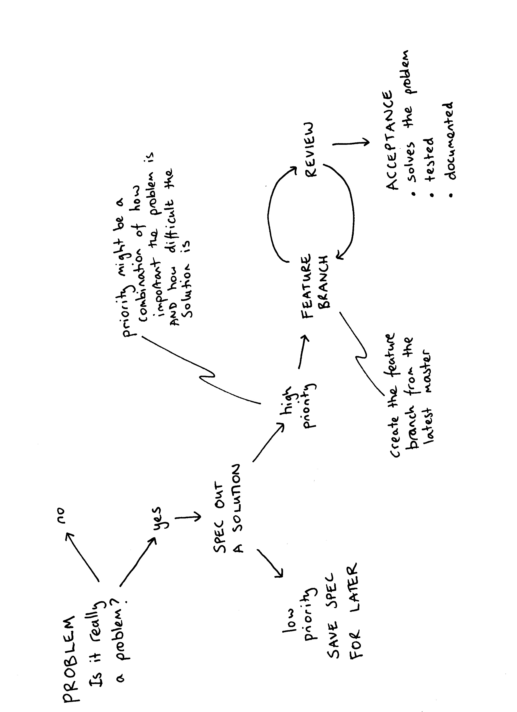
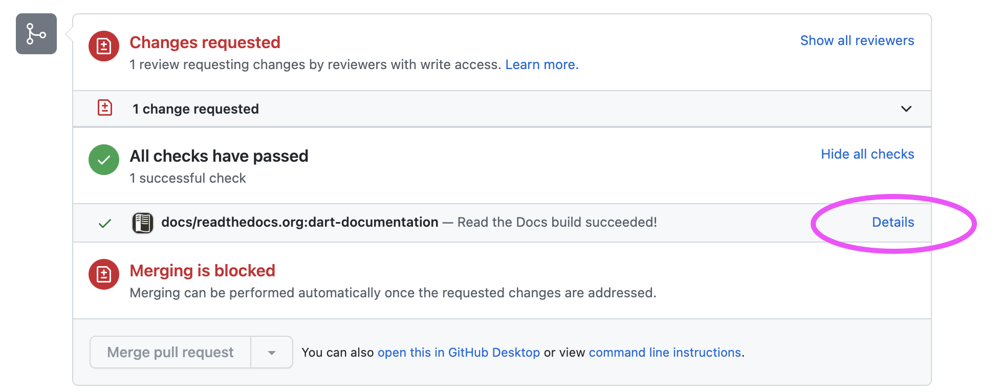

Welcome to the DART developers handbook
Goal of this document
A living document to describe the DART software workflow. Our current workflow is using Github.
Things we don't have yet:
- a project management system
- a release schedule
Things we do have:
- standups
- issue tracking via Github
- code review via pull requests on Github
- this many lines of code:

DART flow
DART flow is the workflow to go from having an idea for a feature to getting the feature into the DART code, so your feature can be used do science.

- Create an issue. Describe the problem you are trying to fix. Currently we are using Github for issue tracking.
- Add a label to the issue The label helps prioritize the issue. Is it
a bug fix, is it a new feature, is it refactoring existing code? Use
the label
back-burnerfor something that is low priority - Describe your solution in the issue. Give an estimation of how much code this will effect. Will your solution require changing several modules? The writing specifications section of this document gives an example of how to describe your solution.
- Get some feedback on your solution, the standup is a good place to ask for volunteers. This is a good time to have an in-person meeting to chat about your spec.
- Create a feature branch to use for your solution. Once you are happy with your feature branch, push the branch up to the main DART repo and create a pull request
- Be as helpful to your reviewers as you can. Only include changes relevant to your issue and avoid changes that are not relevant to the particular issue.
- If your pull request is approved, merge into the main branch and create a release
Feature Branch Workflow
DART is using a Feature Branch Workflow.
"The core idea behind the Feature Branch Workflow is that all feature development should take place in a dedicated branch instead of the main branch. This encapsulation makes it easy for multiple developers to work on a particular feature without disturbing the main codebase."
It also means, ideally, that the main branch will never contain broken code. Atlassian has a nice comparison of the various workflows people use.
Branch naming conventions
main
This is the main branch. It should always work.
feature-branch
Your feature branch should have a descriptive name which indicates what bug fix or feature the branch contains. For example, a feature branch for adding a flu forecasting model could be called: flu-model
gh-pages
This branch is used to serve the website dart.ucar.edu. It only has the website content. To make changes to the website, follow the instructions on https://github.com/NCAR/dart-web
Setting up your git environment
Set your username and email that you want to be linked with git. What you select here will be the 'author' information for your commits.
git config --global user.name “Margaret Hamilton”
git config --global user.email mhamilton@nasa.gov
Set the editor you want to use for commit messages: vim, nano, emacs, notepad++, whatever your favorite editor is. In this example, I am setting my editor for commit messages to vim.
git config --global core.editor vim
Note this doesn't mean you have to edit all code with vim. This just means git will open vim when it wants you to write a commit message.
To display what your git settings are:
git config --list
Creating a feature branch
Create your feature branch from the main branch.
git clone https://github.com/NCAR/DART.git
cd DART
git checkout main
git checkout -b new-feature
where new-feature is the name of your feature branch.
Try not to name your branch after yourself, e.g [barbara-liskov. Pick a name that represents what you are working on, e.g. oop-version-of-filter.
To push your branch up to the DART repo:
git push -u origin new-feature
Note
The -u flag means your local copy will track the remote repo. It is no
big deal if you don't do it, but it is nice to have git status tell you "your branch is up to date with
remote/new_branch_name" or "your branch is 2 commits behind
remote/new_branch_name"
Keeping your feature branch up to date with the main
As you are working on your feature branch, the main branch may have been updated.
To keep your feature branch up to date with the main:
git checkout main
git pull
git checkout new-feature
git merge main new-feature
Make sure you have committed any changes to your new-feature branch before updating from the main
Once your feature is ready for review, submit a pull request
Writing Good Commit Messages
one line short summary of the change
more detail if needed on why you changed what
For example,
Place ring in Mount Doom
Ring is destroyed, Sauron loses his power forever. All he created collapses,
the Nazgûl perish, and his armies are thrown into such disarray that Aragorn's
forces emerge victorious.
Commit messages are visible to the whole world on Github.
Public development
In general, all DART development is public, either on the DART repository or a fork of the DART repository.
Private development
When is it ok to use a private repo?
- collaborators require a private repo for development.
- You want to have content for the DART team only.
If you want to use Github with a private version of the DART repo with your collaborators. You can create a new private repository on Github, for example https://github.com/your-private-repo, and use this new private repo as a remote. Follow the same conventions for feature branch workflow by creating a branch for you and your collaborators to use.
git clone https://github.com/NCAR/DART.git
cd DART
git checkout main
git checkout -b embargoed-feature
git remote add collab https://github.com/your-private-repo
git push -u collab embargoed-feature
In the above example,
https://github.com/your-private-repo
is the private repository
embargoed-feature
is the branch where the private development will be done
collab
is the name of the remote
To list all the remotes you have for a repository, use
git remote -v
Writing Specifications
The goal is software engineering is to solve problems. Code is one part of this.
A spec outlines how you are going to solve a particular technical problem. Here are some questions to have in mind when you sit down to write a spec:
- What is the problem you are trying to solve?
- Is this the right problem to be solving?
- What are the possible solutions to the problem?
- What are the trade-offs for the solution you chose?
- How should you test your solution? For each test, what is a pass, what is a fail
A good spec, has many advantages:
- You can get feedback on your design before you write a lot of code.
- It allows other people to get an idea of the scope of your problem, and prioritize the most critical parts.
- A good spec can be the base for your documentation.
- A spec can be used when judging how successful a particular effort was.
The drawbacks of specs:
- You might not really be able to think about the problem until you start writing the code.
- You may plan in great detail, but encounter unexpected problems that take your code in a completely different direction.
Note
When you write a spec, put your name on it.
Below is an outline of what to put in a spec with some examples.
Front Matter
Title: Using Zarr files with DART
Author: Carol Shaw
Date: November 5th 1982
Overview
Describe the goal of the project. The big picture, why it is important, what problem is it going to solve. An example,
DART needs to be able to work with Zarr files because data assimilation has become a key part of animating the next Toy Story movie and much of the computation will be done in the cloud.
Terminology
Define any terminology that someone reading the spec needs to know. For example,
Zarr : A file format for storing chunked, compressed arrays that plays nicely with cloud storage.
Functional Specification
This describes the expected behavior of the system. Its purpose is to describe how a user will interact with the system. One of the uses for a functional spec is in designing tests, because the tests should check the expected behavior of the system.
Default behavior :
What the system will do.
User options :
What options a user can choose, and what is the expected behavior for each option.
You may want to write the functional spec in the form of user stories:
Angelica Pickles is simulating a tornado with WRF and wants to output Zarr files. She sets the namelist options
restart-format = Zarrand runs filter.
Details about how a user interacts with the code, are probably the part of the spec that gives you the most bang for your buck.
Technical Specification
This describes how the solution will be implemented. This technical spec can be used to design unit tests. The technical spec may include performance requirements.
Open Issues
List any unsolved issues. This helps people reading the spec to understand the crux(es) for the project.
Non Goals
This describes what is out of scope for this project. For example,
The character design for Woody in the next Toy Story movie
Github
DART is hosted on Github
As a member of the NCAR organization you can create public and private repositories under the NCAR Github organization
The DART team is:
https://github.com/orgs/NCAR/teams/dart
Tracking tasks with Github issues
Github issues are a way to keep track of enhancements, bugs, and discussions about code. Use issues to:
- Report a bug
- Request/Propose a feature
Labels
Github allows issues to be labeled. Here are some you may want to use:
Bug : Something is incorrect or not working
Backburner : A problem that is very low priority, but might be worked on in the future
Science : A problem that needs science discussion to be resolved
You may want to add your own labels, for example, if you are working a lot with WRF, you may want to add the label WRF so you can search for all issues related to WRF.
Reporting Bugs
A bug report should contain the following:
- The steps someone needs to take to reproduce the bug.
- What you expected to happen.
- What actually happened.
Here is an example bug report:
-
Steps to reproduce:
- Use kroger brand cake mix.
- Mix 2 cups of water with into the cake mix to produce a batter.
- Turn on the NCAR oven in the Mesa Lab.
- Bake the batter in a pyrex dish for 20 minutes at 350F.
-
What I expected to happen:
A cake
-
What actually happened:
Cake batter not cooked at all.
Try to have a reproducer for the bug that is as small as possible. The smallest number of observations, the fewest time steps, the lowest resolution model.
Pull requests
The main branch of DART is protected. New code needs to be submitted as pull request. At least one approval from a member of the DART team is needed to merge code into main. The process to go from a pull request to released code is:
- review [reject, request changes, approve]
- make required changes
- merge
- tag a release
Reviewing
The key questions to think about when reviewing pull requests:
- Does this pull request address the issue? If the pull request contains other changes that are not related, it is ok to close the pull request.
- Has the code passed the required tests?
- Has the documentation been updated?
- Does the pull request improve the existing code?
- Does this pull request break backwards compatibility? If so, now may not be the time to merge this feature.
When giving comments on code, try to give comments that:
- are actionable.
- differentiate between a suggestion, a definite change, or a point that needs a discussion or clarification.
- are collaborative not accusatory.
If there are a lot of comments or questions on the code, schedule and in person meeting.
Checking out pull requests
For pull requests that are following DART flow you can checkout the feature branch from the DART repo
git fetch origin
git checkout feature-branch
To checkout a pull request that is not from a branch on the DART repository, for example a pull request from an external collaborator.
git fetch origin pull/ID/head:BRANCHNAME
git checkout BRANCHNAME
where ID is the number of the pull request and BRANCHNAME is your choice for the name of the branch
Being Reviewed
It can be quite difficult having someone review your code. Remember software engineering is programming integrated over time. Code reviews are a process to produce better code and better developers. Karl Wieger's article Humanizing Peer Reviews is a good read about overcoming some of the barriers to successful peer review.
Creating a Release
The DART releases are available on Github:
https://github.com/NCAR/DART/releases
The releases loosely follows the rules of semantic versioning with a v at the start, e.g. v9.10.11.
vMAJOR.MINOR.PATCH
Given a version number vMAJOR.MINOR.PATCH, increment in the following way:
| MAJOR | version when you make incompatible API changes |
| MINOR | version when you add functionality in a backwards compatible manner |
| PATCH | version when you make backwards compatible bug fixes. |
You may want to use additional labels for pre-release or other code as
extensions to the vMAJOR.MINOR.PATCH format.
Make sure your pull request is up-to-date with main before merging and creating a release.
To create a release on Github:
-
Decide on a tag number following the convention
vMAJOR.MINOR.PATCH -
Update the CHANGELOG.rst with the tag and a brief desciption of the changes.
-
Change the version in
conf.py -
Merge into main
-
Create a release on GitHub from the main branch, by clicking on
Draft a new release
-
Enter the tag number. Make sure the target branch is main.
-
Give the release a title and description.
-
Click publish to create the release.
For a major release or critical bug-fix releases, you may want to email the dart-users group.
Github Playground
Ideal-rotary-phone is a no-consequence repo for trying out Github features. It is a good place to practice pull reviews.
The repository is visible only to members of the NCAR Github organization.
https://github.com/NCAR/ideal-rotary-phone
The content is consciously quite silly. This is s to keep the focus on git and Github without having to think about creating sensible code.
DART web presence
Documentation
The documentation for DART is written in reStructuredText, then converted to html using Sphinx. The conversion to html is done automatically by readthedocs, when new content is pushed to a branch.
Documentation is built for pull requests. You can view the documentation
build by clicking on show all checks then details.

You can build the DART documentation locally using Sphinx.
Installing Sphinx Locally
To install Sphinx in a Python virtual environment:
python -m venv dev-guide
source dev-guide/bin/activate
pip install Sphinx
To make the docs, run:
make html
To view the docs:
open html/index.html
with your favorite browser.
To deactivate the virtual environment
deactivate
Website
There are two repositories to be aware of for the DART website:
https://github.com/NCAR/dart-web.git Is the repository used to build the site.
The website is hosted via GitHub pages on dart.ucar.edu:
https://github.com/NCAR/DART.git
For instructions on building the website, read the README at https://github.com/NCAR/dart-web